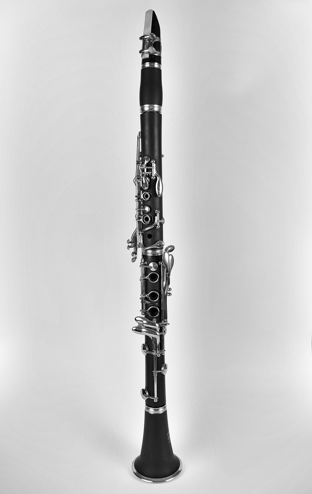

Clarinete
O clarinete é um instrumento musical da família das madeiras,
conhecido por sua sonoridade versátil e expressiva.
Características do produto
- Afinação em Si bemol (Bb)
- Corpo resistente e acabamento preto
- Chaves metálicas
- Acompanha boquilha e estojo
- Indicado para estudantes e músicos
Como utilizar
- Monte cuidadosamente as partes do clarinete.
- Coloque a palheta na boquilha e prenda com a abraçadeira.
- Ajuste a boquilha no barrilete.
- Posicione corretamente os dedos sobre as chaves.
- Após o uso, limpe e guarde o instrumento no estojo.
Imagem do produto

Clarinete em Si bemol (Bb).
Links
Para saber mais sobre instrumentos musicais, acesse o
artigo sobre clarinete
.
Saiba mais sobre este produto.
Especificações do produto
Ficha técnica do clarinete
| Característica |
Especificação |
| Instrumento |
Clarinete |
| Afinação |
Si bemol (Bb) |
| Família |
Madeiras |
| Cor |
Preto |
| Indicação |
Estudantes e músicos |